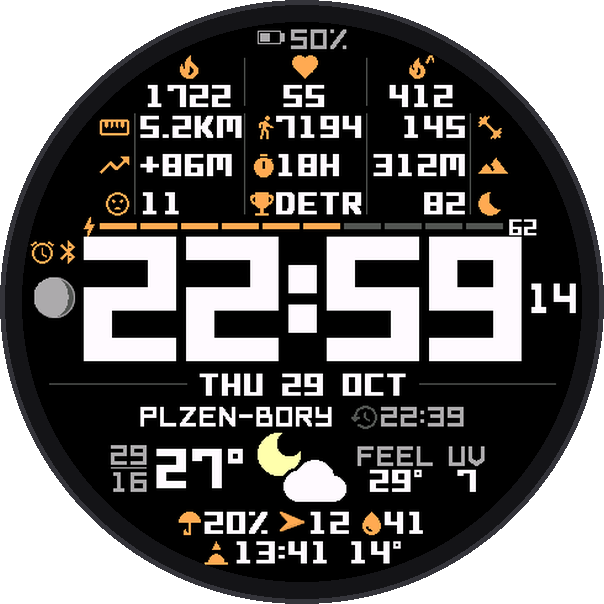
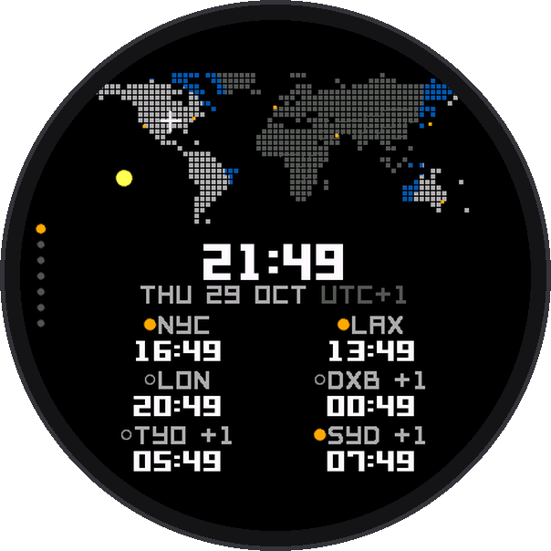
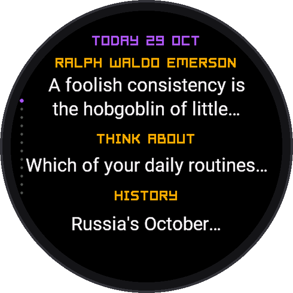

For Garmin watches
Elegant, rich in data, light on the battery.
A watch face and four apps that share one design: big clear type, every pixel with a job, and the numbers you actually use. Free for now.
See the watch face
The family
Watch facePharosA big, clear time with 12 smart fields and real weather around it. Watch appPharos HubWeather, world time, fitness and a good read in one app, with your day on one screen.
Watch appPharos HubWeather, world time, fitness and a good read in one app, with your day on one screen. Watch appPharos WeatherRain in the next minutes, a 24-hour chart, hours and 5 days.
Watch appPharos WeatherRain in the next minutes, a 24-hour chart, hours and 5 days. Watch appPharos FitThe numbers Garmin collects but doesn't show you: forecasts, trends, records.
Watch appPharos FitThe numbers Garmin collects but doesn't show you: forecasts, trends, records.
Watch appPharos HubWeather, world time, fitness and a good read in one app, with your day on one screen.Watch appPharos WeatherRain in the next minutes, a 24-hour chart, hours and 5 days.
Watch appPharos TimeWorld time on a live day and night map, plus sun, moon, seasons and tides.Watch appPharos FitThe numbers Garmin collects but doesn't show you: forecasts, trends, records.
Watch appPharos MindSomething worth reading on your wrist: quotes, ideas, history, a riddle.Made with care
- Designed for round screens, made for 70 Garmin watches
- One update a minute on the face; apps use no battery when closed
- Quotes, facts and dates checked by hand
Respectful
- No accounts, no tracking, no ads
- Your position is rounded before it is sent, and only where a feature needs it
- Privacy policy